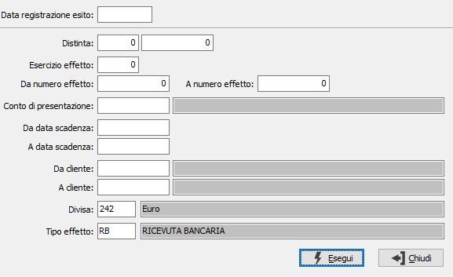

Annullamento esito effetti
Il programma provvede ad annullare l'esito degli effetti selezionati nei limiti; se previsto, dalla configurazione, l'utilizzo di un conto di transito, viene eliminato anche il movimento contabile.

DATA REGISTRAZIONE ESITO: campo obbligatorio che indica la data in cui è stato effettuato l'esito da annullare.
Fra i parametri che vengono richiesti compaiono anche l'anno ed il numero della distinta, che è possibile utilizzare, per richiamare una distinta.
ESERCIZIO EFFETTO: indicare l'esercizio relativo agli effetti da elaborare.
DA NUMERO PROTOCOLLO: indicare il numero dell'effetto da cui iniziare l'elaborazione.
A NUMERO PROTOCOLLO: indicare il numero dell'effetto con cui terminare l'elaborazione.
CONTO DI PRESENTAZIONE: codice alfanumerico di 8 caratteri, presente nella tabella Conti correnti, per indicare la banca di presentazione della distinta. Sul campo è attiva la viste F9 sulla tabella stessa.
DA DATA SCADENZA: indicare la data di scadenza da cui si intende iniziare la selezione degli effetti. Confermando a vuoto la stampa inizia dal primo effetto valido per l'esercizio corrente.
A DATA SCADENZA: indicare la data scadenza con cui si intende terminare la selezione degli effetti. Confermando a vuoto la stampa termina con l'ultimo effetto valido.
DA CLIENTE: indicare il codice cliente dal quale si vuole far iniziare l'annullamento dell'esito delle partite.
A CLIENTE: indicare il codice cliente al quale si vuole far terminare l'annullamento dell'esito delle partite.
DIVISA: codice alfanumerico di 3 caratteri, presente nella tabella Divise, per indicare la divisa degli effetti che si vogliono selezionare. Sul campo è attiva la ricerca (F9) sulla tabella stessa.
TIPO EFFETTO: definisce il tipo di effetto da selezionare. Sul campo è attiva la funzione di ricerca (F9).